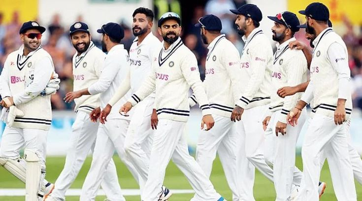
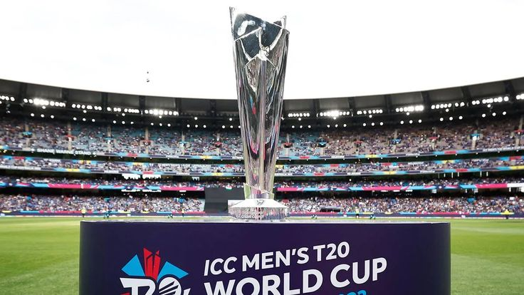
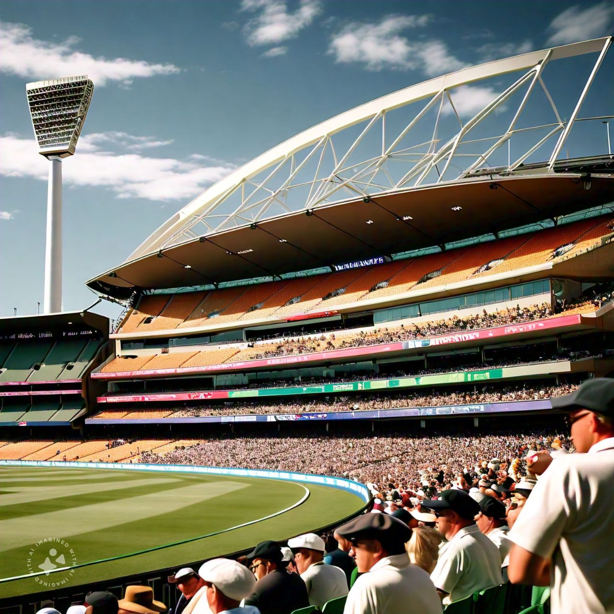
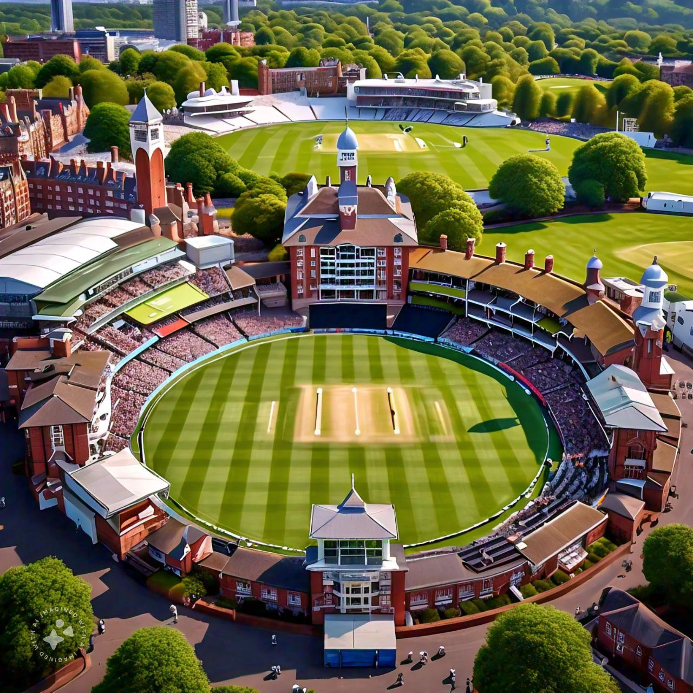
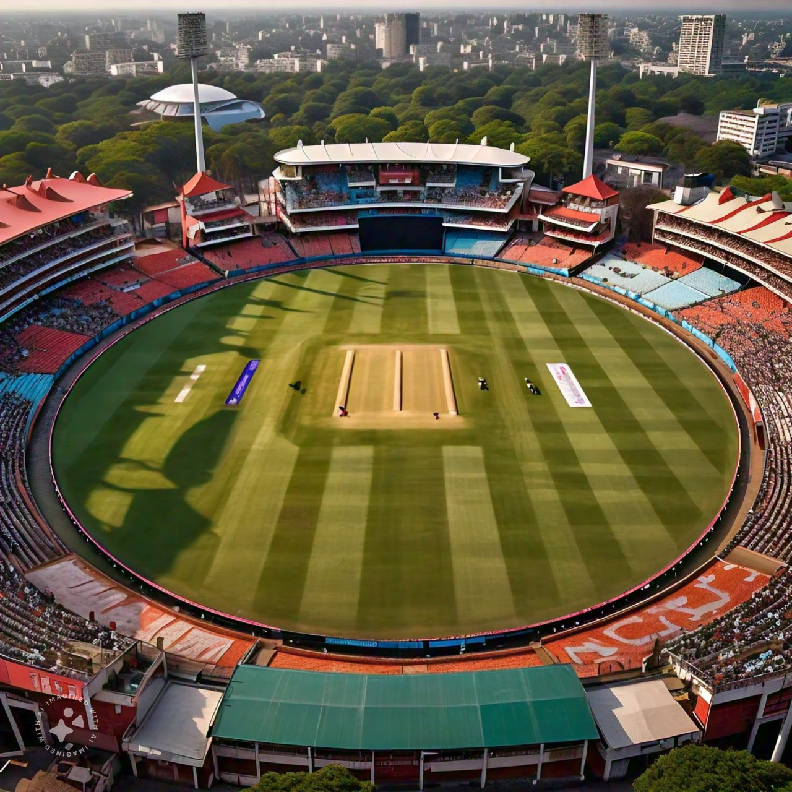

Cricket is a dynamic and widely loved sport that originated in England and has since become a global phenomenon, particularly in countries like India, Australia, Pakistan, South Africa, and the West Indies. The game is played between two teams, typically of eleven players each, on a large oval-shaped field with a central pitch. The core of the game revolves around batting, bowling, and fielding, with the goal being for the batting team to score as many runs as possible while the bowling and fielding team tries to dismiss them. The game has various formats, ranging from the fast-paced Twenty20 (T20) games, which last a few hours, to the more traditional and strategic Test matches, which can span up to five days.
Cricket's global appeal lies in its ability to bring people together. Iconic tournaments like the ICC Cricket World Cup and the T20 World Cup attract millions of fans worldwide, uniting nations in celebration. With its blend of competition and camaraderie, cricket continues to thrive as a sport that inspires passion and pride among its players and supporters.
Cricket's origins can be traced back to 16th-century England, where it began as a simple pastime. By the 18th century, it had grown in popularity, becoming a professional sport with the establishment of county cricket. The first international match was played in 1844, and cricket expanded globally with the British Empire. Over time, advancements in technology, rules, and formats have made the game more dynamic and appealing to diverse audiences.
The game revolves around batting, bowling, and fielding. The batting team aims to score runs by striking the ball and running between the wickets or hitting boundaries. Bowlers attempt to dismiss the batsmen by delivering the ball strategically, while fielders work to prevent runs and execute dismissals. A cricket match is officiated by umpires who ensure fair play and adherence to rules.Cricket is more than just a sport; it is deeply ingrained in the culture of many countries. In places like India, Pakistan, and Sri Lanka, cricket is celebrated with fervor, uniting people across diverse backgrounds. Iconic players like Sachin Tendulkar, Sir Donald Bradman, and Virat Kohli have achieved legendary status, inspiring millions to embrace the sport.
International tournaments like the ICC Cricket World Cup, T20 World Cup, and the Ashes series are among the most prestigious events in cricket. These competitions bring together the best players and teams, showcasing the sport's global appeal. Domestic leagues like the Indian Premier League (IPL) have also revolutionized the game, blending local talent with international stars.
With advancements in technology, cricket is evolving to enhance the experience for players and fans alike. Innovations like the Decision Review System (DRS) and ultra-slow-motion replays have added precision and excitement to the game. As the sport continues to expand into new regions, cricket's future looks bright, promising to inspire and entertain for generations to come.
FORMATS IN CRICKET
Cricket is a unique sport, offering three primary formats—Test Cricket, One-Day Internationals (ODIs), and Twenty20 (T20)—each with its own distinct characteristics. These formats showcase the versatility of the game, ensuring its appeal across a diverse range of audiences. While Test cricket celebrates tradition and endurance, ODIs blend strategy with high-energy action, and T20 is the epitome of modern entertainment. Together, they form the backbone of cricket's global appeal.
TEST CRICKET
Test cricket, the longest and most traditional format, dates back to the late 19th century. It is considered the pinnacle of the sport, where matches last up to five days, and teams play two innings each. This format is often referred to as the "ultimate test" for cricketers, as it requires a combination of skill, patience, and endurance. Players must adapt to changing pitch conditions, weather, and the relentless strategies of their opponents over an extended period.
The beauty of Test cricket lies in its depth. A batsman can build a marathon innings over several hours, carefully crafting their score, while bowlers work tirelessly to find breakthroughs with precision and persistence. Iconic rivalries such as the Ashes, contested between England and Australia, and thrilling Test matches like India's historic series win against Australia in 2021, exemplify the enduring charm of this format. For cricket purists, Test cricket remains the ultimate arena to witness the sport's nuances.

ONE DAY INTERNATIONALS
One-Day Internationals (ODIs) emerged in the 1970s as a modern alternative to Test matches. Each team plays a limited 50 overs, ensuring the match is completed in a single day. This format offers a balanced mix of traditional cricket strategies and faster-paced gameplay, making it appealing to a wider audience. Teams must balance caution with aggression to score quickly while preserving wickets, creating a dynamic contest.
ODIs have hosted some of cricket's most memorable moments. The ICC Cricket World Cup, the pinnacle of this format, has seen historic games like the 1983 final, where India claimed their first World Cup, or the dramatic 2019 final between England and New Zealand, decided by a Super Over. These tournaments showcase the thrill and unpredictability of ODIs, where a single ball can change the game's outcome.
T20 CRICKET
Twenty20 (T20) cricket, introduced in the early 2000s, represents the sport's most revolutionary format. Each team plays only 20 overs, with matches lasting around three hours. Designed to captivate modern audiences, T20 emphasizes fast scoring, innovative gameplay, and thrilling finishes. This format has redefined cricket, blending athleticism and entertainment into a high-energy spectacle.
T20 leagues, particularly the Indian Premier League (IPL), have elevated the format to new heights. Featuring international stars, dramatic moments, and a festive atmosphere, leagues like the IPL have made T20 cricket a global phenomenon. The short duration and action-packed nature of T20 games make it perfect for casual fans and seasoned enthusiasts alike. Iconic T20 World Cup moments, such as India's victory in the inaugural 2007 tournament, have further cemented the format's popularity.

Welcome To Famous Cricket Stadium!
1.Melbourne Cricket Stadium
Location: Melbourne,Australia
Capacity: 100,024
Home Team: Australia
"The Melboune Cricket Ground (MCG) is one of the most revered stadium in the world, Steeped n history and sporting tradition"
2.Lord's Cricket Stadium
Location: London, England
Capacity: 30,000
Home Team:England
"Lord's widly regarded as one of the most prestigious and revered cricket stadium in the world, with a rich history and tradition. It's often referred to as the spirtual home of cricket"
3.Eden Gardens
Location: kolkata, India
Capacity: 66,000
Home Team: India
Eden Garden is often referred to as the "Mecca of Indian Cricket" and is a beloved symbol of Indian sports culture